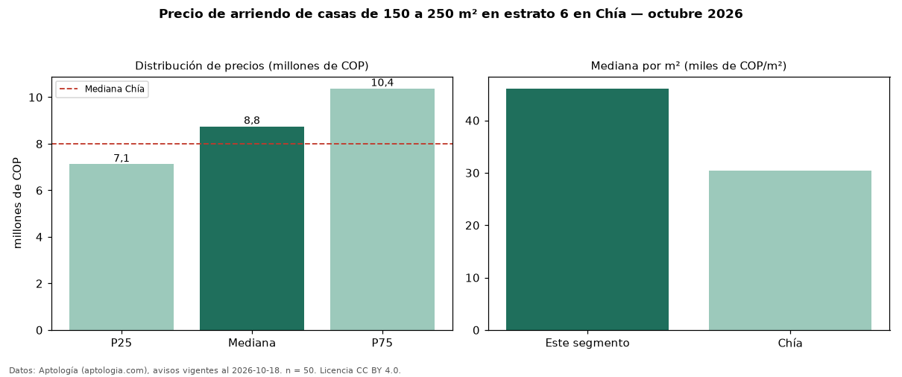

Precio de arriendo de casas de 150 a 250 m² en estrato 6 en Chía — octubre 2026
Con 50 avisos vigentes, el canon mediano de casas de 150 a 250 m² en estrato 6 en arriendo en Chía es COP 8,75 millones al mes. Frente a la mediana de las casas en estrato 6 en arriendo de Chía (COP 12 millones, n = 257), queda 27 % por debajo; este segmento reúne el 19 % de esos avisos. Por metro cuadrado, la mediana es COP 46.093/m² al mes (n = 50), 36 % por encima de las casas en estrato 6 en arriendo de Chía (COP 33.935/m²). El área mediana anunciada es 196 m². El segmento con más oferta es el de 3 o más habitaciones (50 avisos, mediana COP 8,75 millones). La administración mediana declarada es COP 1,45 millones al mes (n = 25), aparte del canon. La mediana de todas las casas en arriendo de Chía es COP 8,00 millones (+9 % de diferencia). La mitad central de los avisos va de COP 7,12 millones a COP 10,38 millones (razón 1,5), una dispersión moderada. Datos: Aptología (aptologia.com), CC BY 4.0 — https://www.aptologia.com/arriendo/chia. Archivos: PDF, CSV con las cifras y gráfica PNG.

| Avisos únicos | 50 |
|---|---|
| Percentil 25 | COP 7.125.000 |
| Mediana | COP 8.750.000 |
| Percentil 75 | COP 10.375.000 |
| Mediana por m² | COP 46.093 |
Fuente: avisos vigentes de portales inmobiliarios recopilados por Aptología, deduplicados (mínimo 30 avisos únicos por celda). Precios pedidos, no cerrados. Fecha: 2026-10-18.